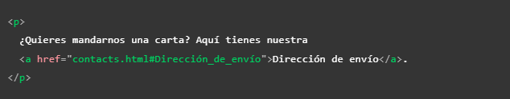
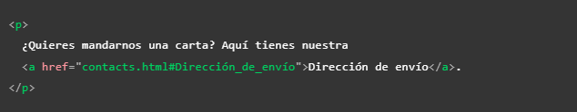
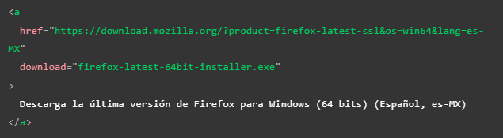
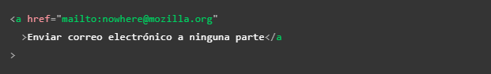
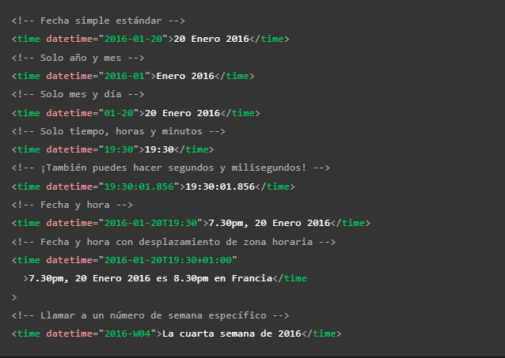

Etiquetas con uso espesificos
Se tratan de etiquetas creadas con el fin de cumplir con roles espesificos, esto no significa que sean elementos inutiles o poco relevantes, ya que segun cual sea el caso de uso cualquiera de estas etiquetas puede ser muy util siempre que sea bien empleada, son etiquetas con usos simples y faciles de entender.
A
-
Significa "ancla," es la biñeta utilizada para definir los hipervinculos, el texto que se desee mostrar como enlace debera estar ubicado dentro de esta biñeta.
Esta biñeta no solo redirigue al usuario a otra paguina, si no que tambien puede llevarlo a una sección en espesifico de esta, esto se hace añadienso un "#" seguido del id del elemto que se desee ubicar, (todo esto escrito sin espacios), ya que el "#" hace referencia al id de un elemto. De la misma forma tambien se puede re-dirigir a una sección dentro del mismo documento, esto se hace unacmente escribiendo el "# "seguido del id del elemto seleccionado.
A continuación se muestran dos ejemplos el primero es de una re-dirección a un elemto del mismo documeto, y el segundo a una redirección a un area en particular de un documeto externo.
 

Atributos
href: Es el atributo designado para indicar la dirección http a la quu el encase dirigirá al usuario, puede ser una ubicación interna o externa de la pagina
tittle: Esta etiqueta define el un texto explicativo que hará aparición si el usuario mantiene el raton sobre el enlace, por lo tanto no sera visible para usuarios que navegen usando el teclado o dispositivos tactil
target: Este atributo define la ventana en la que se abrira el nuevo enlace, si se usa el valor "_blank" se abrira la nueva pagina en una pestaña diferete, en cambio si se omite este atributo el enlace se abrira por defecto en la pestaña activa
Nota: cualquier elemeto puede ir dentro de la biñeta "a", por lo tanto casi cualquier casa puede ser convertida en un en unlace, desde contenedores e imagenes etc.
Nota: Es recomedable que los enlaces brinden palabras claves o algun tipo de información sobre la información a la que re-dirigen ya que tanto los usuarios como los motores de lectura escanean la paguina y uno de los elemtos resaltados en los que se guian son los enlaces.
Nota: Otros consejos al crear enlaces son: que el texto que los componga sea breve, los textos exsivamente largos no son gratos, tambien es recomendable evitar que el texto de estos enlaces sea repetitivo, ejemplo de mala practica: "Haz clic aquí".
Nota: Es recomedable usar las direcciones relativas de archivos siempre que sea posible, ya que pese a que deja de funcionar si el archivo en el que se encuentra el llamado cambia de lugar, estas son más efiientes en terminos de procesamiento y más legibles en el cosido, por lo que daran un codigo más legible.
Descargar un archivo en un enlace
Para indicar que se trata de la descarga de un elemento se utiliza el atributo "download", el cual no solo indicara que el navegador debe descargar el elemento seleccionado si no que tambien define el nombre que se vinculara al archivo al hacerlo (esto lo hace en base al texto que se indique en el atributo).
Enviar un correo mediante un enlace
Esta es otra función que ofrece la etiqueta "a", para aser uso de esta se utiliza el valor "mailto", en el atributo "href" seguido del correo electronico al que se desee que el usuario contacte, esto abrira una ventana de correo electronico con el correo en cuestion selecionado como destinatario, a su vez otra opción es poner el atributo "href" unicamnte con valor de "mailto" esto abrira la venta de correo pero no proveera un destinatario en espesifico.
El siguiente es un correo de como se usa el atributo "mailto":
 Br
-
Esta la función de esta etiqueta es muy simple, indica un salto de linea, sin importar realmente en que lugar o contenedor se encuentre siempre tendra el mismo efecto el cual es equivalente a presionar Enter en un editor de texto.
Si se utiliza en el interior de una etiqueta "p" (parrafo) esta biñeta aplicara el mismo efecto que tendria un "punto y aparte", por lo tanto el texto saltara a la siguiete linea pero no se distanciara de la linea anterior ni tomara sangria, por lo tato se puede usar para representar lineas cortas como las de un verso.
Details
-
Actua com un widget de revelación, ya que tiene la funcionalidad de mostrar un texto oculto el cual se repliega o muestra cuando se clickea sobre este, es un elemento de contenido dinamico, es necesario tener presente que se trata de una etiqueta baste reciente por lo tanto no esta abilitada en verciones antiguas de los navegadores, a su vez puede ser ubicada en cualquier elemento que acepte contenido dinamico.
Atributos
"Details" incluye los atributos globales
open: Este atributo Booleano indica si los detalles serán mostrados al usuario cuando la página se cargue, por defecto el valor es false y por lo tanto los detalles estarán ocultos
A continuación se muestran dos ejemplos el primero consiste en una imagen ejemplo del codigo del elmento y el segundo ejemplo se trata de del resultado de este codigo:
Ejemplo

Efecto
Some details
More info about the details.
Hr
-
Esta es otra etiqueta con una función simple, de aplicarse crea una linea horizontal en el contenedor en que se encuentre, se utiliza para crear divicones visuales.
Ejemplo de visualización
Primer elemto
Segundo elemto
Time
-
Existen muchas formas de plasmar una fecha, sin mencionar que esto puede representarse de forma deferente en algunos lugares, para eso se utiliza el elemto "time", acompañado del atributo "datetime", ya que este elemto tiene la ventaja de que funciona para cualquier formato de fecha (hora, dia, mes, año) así como para las mesclas de estos.
Su uso consiste en ingresar la fecha dentro del atributo "datetime" con el formato adecuado para que sea entendible por el navegador, a su vez dentro de la etiqueta se ingresa la fecha de la forma que sera visible para los usarios, de esa forma el usuario puede visualizar cualquiera que sea el formato de fecha con el que este familiarizado, sin que el navegador presente algun error
Elemplos de aplicación
